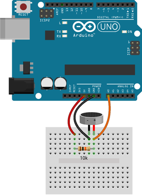
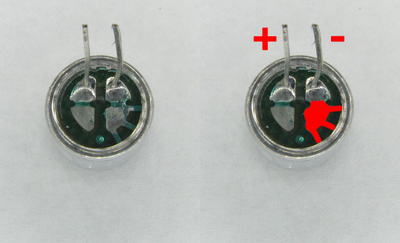

This experiment uses a Microphone to detect a clap or loud noise and switch an LED on.
Wire up the experiment as shown in fig. 1

The microphone module is polarised, which means it has a positive and negative terminal which must be correctly placed in the circuit in order to function as expected. Please examine fig: 2 to correctly identify which leg is positive and which is negative.

In the Arduino IDE, create a new sketch and enter the following code:
//global variables
int readValue;
int maximumValue;
int minimumValue;
// will reset maximum and minimum values only when we call it
void resetMaximumAndMinimum()
{
maximumValue = 0; // set maximum to lowest value possible
minimumValue = 32767; // set minimum to highest value possible
}
// this runs only once on the startup
void setup()
{
// initialize built-in LED light at digital pin 13 as an output
pinMode(13, OUTPUT);
resetMaximumAndMinimum();
}
// the loop runs over and over again forever
void loop()
{
// read current value from the microphone
readValue = analogRead(A0);
// if read value is smaller than minimum then set it as the new minimum
if (readValue < minimumValue)
{
minimumValue = readValue;
}
// if read value is bigger than maximum then set it as the new maximum
if (readValue > maximumValue)
{
maximumValue = readValue;
}
// Change the 10 constant to adjust the sensitivity.
// To 20 if you want the light triggered on louder claps
// Ti 5 if you want the light triggered on quieter noises
// Feel free to experiment with the values.
if ( (maximumValue - minimumValue) > 10 )
{
digitalWrite(13, HIGH); // turn the LED on (HIGH is the voltage level)
delay(2 * 1000); // wait for 2 seconds (2 * 1000ms)
digitalWrite(13, LOW ); // turn the LED off by making the voltage LOW
// if we wouldn't clear the max & min then after first trigger it would get
// triggered every single time no matter what read values were
resetMaximumAndMinimum();
}
}There's usually more than one way to write a program.This sketch does the same thing as the provious one...
//global constants
#define noiseThreshold 10 // increasing it will make trigger less sensitive
#define microphonePin A0 // analog pin A0 is connected to microphone
#define ledPin 13 // digital pin 13 is connected to LED
#define ledTime 3 // LED will be lit for 3 seconds
// this runs only once on the startup
void setup() {
// initialize desired ledPin as output
pinMode(ledPin, OUTPUT);
}
// the loop runs over and over again forever
void loop() {
static unsigned int maximumValue = 0;
static unsigned int minimumValue = 65535;
// read current value from the microphone
unsigned int readValue = analogRead(microphonePin);
// if read value is bigger/smaller than our current max/min then update our max/min
if (readValue < minimumValue) {
minimumValue = readValue;
}
if (readValue > maximumValue) {
maximumValue = readValue;
}
// if the noise was too loud lit the light
if ( (maximumValue - minimumValue) > noiseThreshold ) {
digitalWrite(ledPin, HIGH); // turn the LED on (HIGH is the voltage level)
delay(ledTime * 1000); // wait for predefined time
digitalWrite(ledPin, LOW ); // turn the LED off by making the voltage LOW
maximumValue = 0; // set maximum to lowest value possible
minimumValue = 65535; // set minimum to highest value possible
}
}